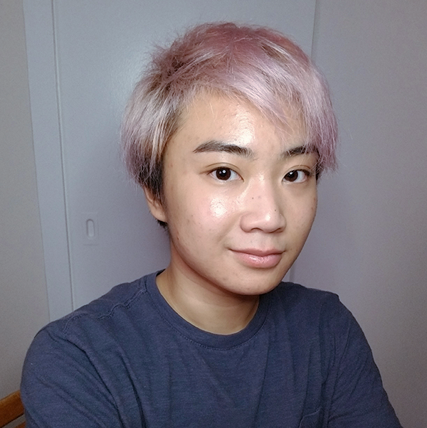
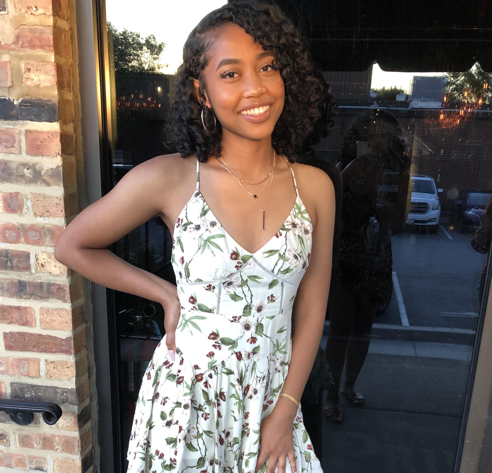
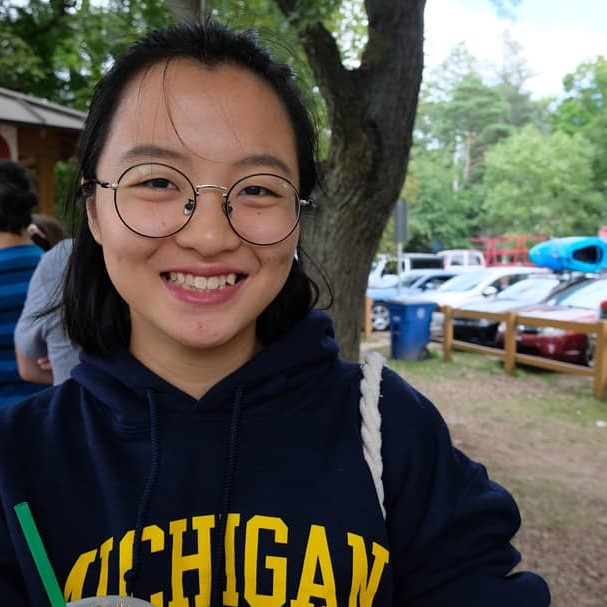
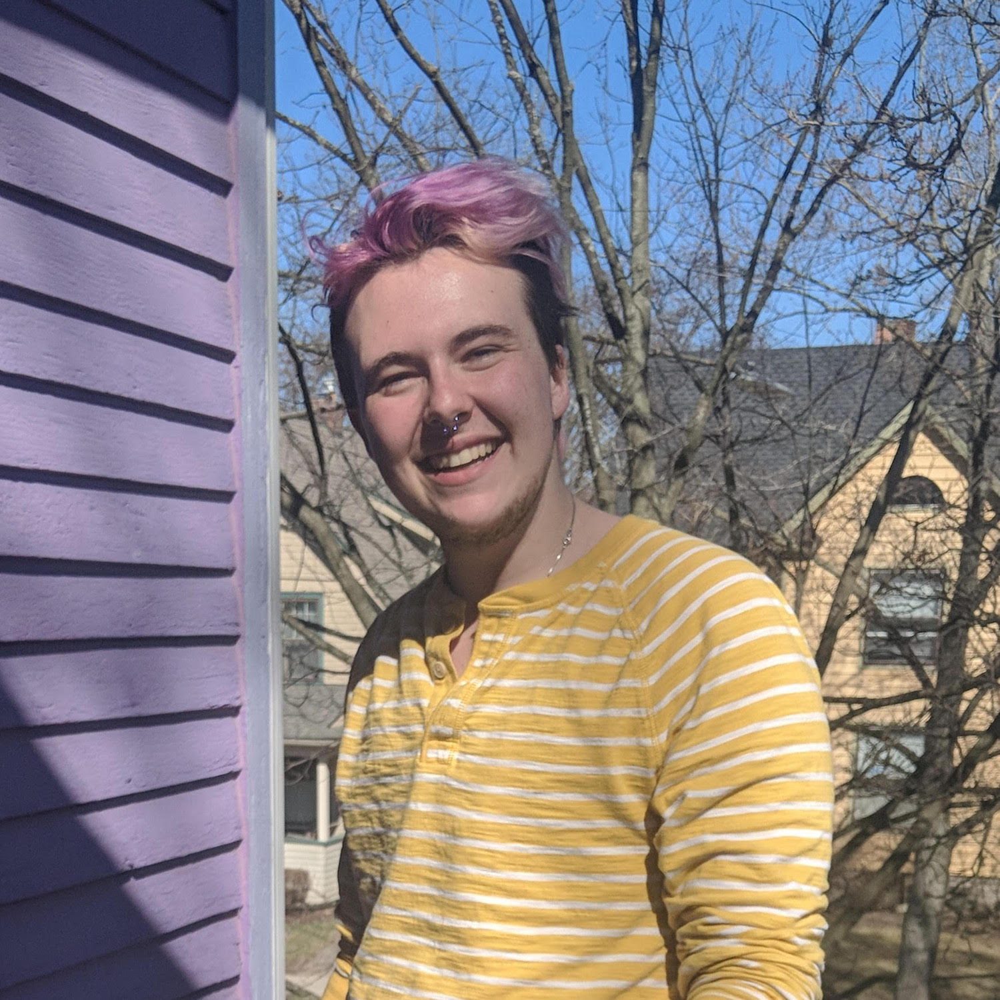

Teaching Assistant, Carnegie Mellon University
Principles of Economics
Guest Lectures
Trans Technologies. Guest lecture for Software Space (Architecture 509). University of Michigan. October 2019.
Some Things I've Learned About Survey Methods from Designing and Deploying Surveys,
2014-2019. Invited guest for Research Methods (School of Information 840). University of
Michigan. February 2019.
Relationship Breakups and Media Ideologies on Facebook. Invited guest for
Interpersonal & Psychological Implications of Social Media (School of Information 315). University of
Michigan. October 2017.
Understanding Interfaces, Users, and Tasks. Guest lecture for
Introduction to HCI (Info 608). Drexel University. July 2017.
Identity, Self-Disclosure, and Social Media. Invited talk at University of
Pittsburgh, i3 iSchool Inclusion Institute (with Nazanin Andalibi). Pittsburgh, PA.
June 2017.
Research and Design for Sensitive Populations. Invited guest for
User-Centered Design (COSC 480) (with Nazanin Andalibi). Colgate University.
November 2016.
Online Identity. Guest lecture for Mediated Interpersonal
Communication (Communications 350). University of Hawaii. May 2015.
Using Online Data to Understand Issues of Gender, Sexuality, Identity, and Public
Health. Invited workshop at University of Pittsburgh, i3 iSchool Inclusion Institute. Pittsburgh, PA.
June 2014.
Information Visualization and Narrative. Guest lecture for Social
Analysis of Computing (Informatics 161). University of California, Irvine. Irvine, CA. October 2013.
Network and Information Visualization. Invited workshop at University of Pittsburgh, i3 iSchool Inclusion
Institute. Pittsburgh, PA. June 2013.
STUDENTS
Prospective students:
I will be recruiting PhD students to start in Fall 2020.
If you are a prospective PhD student interested in working with me, please apply
to the UMSI PhD program. If you are a current UM masters student or undergraduate
student interested in working with me, please email me with your CV/resume and research interests.
I am particularly interested in working with students who want to conduct research on
one or more of the following topics: 1) life transitions and social technologies 2) transgender
and/or LGBQ+ people and social technologies 3) social media content moderation and marginalized populations.
PhD Students
Dan Delmonaco
PhD Student, co-advised by Gabi Marcu pronouns: he/him research interests: health information practices, information access, digital resources

Hayden Le
PhD Student, co-advised by Libby Hemphill pronouns: they/them or he/him research interests: computer-mediated communication, computational social science,
natural language processing, human-computer interaction, behavior change
Masters Students
Taika Augustaitis
Masters Student, Information pronouns: he/him research interests: social media, social determinants of health, human-computer interaction,
information seeking needs of marginalized communities
Justin Buss
Masters Student, Information pronouns: he/him research interests: gender, social media, identity formation and management, information behaviors
Dykee Gorrell
REMS Visiting Masters Student pronouns: she/her research interests: data science, machine learning algorithms, technology, climate change, food deserts,
carceral systems, black transgender women, homelessness
Denny Starks
Masters Student, Information pronouns: they/them research interests: understanding how transgender and non-binary people of
color practice safety and the types of violence they experience in different contexts
and environments - to design technology to support their safety
Undergraduate Students
AJ Carter
Undergraduate Student, Information pronouns: he/him research interests: social media, LGBTQ+, sociocultural anthropology
Shanley Corvite
Undergraduate Student, Information pronouns: she/her research interests: social media, user experience

Jasmine Glover
Undergraduate Student, Industrial and Operations Engineering pronouns: she/her research interests: social media, behavior, data analytics

Tianxiao (Sharol) Liu
Undergraduate Student, Psychology pronouns: she/her research interests: HCI, social media, user experience, public health
Lingbo Wang
Undergraduate Student, Statistics pronouns: she/her research interests: social media, computational social science, marketing models

Zu Weinger
Undergraduate Student, Sociology pronouns: he/him research interests: trans people's experiences and interactions with
technology, social media, and the world
Brookelyn Wheeler
Undergraduate Student, Biopsychology, Cognition, and Neuroscience pronouns: she/her research interests: human thoughts and behavior